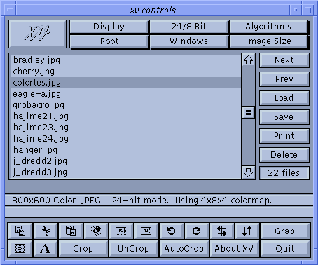
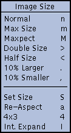

The xv controls window is the central point of control for the program, which just goes to show how appropriately it was named. It contains controls to resize the current image, flip and rotate it, load and save different files, and bring up the other xv windows. It can be brought up by clicking the Right mouse button in the image window, or by pressing the ? key inside any open xv window. Doing either of these things while the xv controls window is visible will hide it.
All of the following commands may be executed by either clicking the appropriate command button, or typing the keyboard equivalent (where given) into any open xv window.
|  | The resizing commands have all been
moved to the Image Size menu. Note that none of
the 'resizing' commands modify the image in any way. They
only affect how the image is displayed. The image remains
at its original size. This allows you to arbitrarily
stretch and compact the image without compounding error
caused by earlier resizing. In each case, the displayed
image is recomputed from the original internal image. Note: The keyboard equivalents for each command are listed on the right side of the menu. These commands may be entered in the xv image window, the xv controls window, the xv info window, and the xv color editor window. They may not be entered in the xv visual schnauzer windows, the xv load window, or the xv save window. The same goes for all other commands listed in the xv controls window. |
This command may fail in two cases. If you're running a window manager (such as mwm) that enforces a minimum window size, and the 'normal' size is too small, the image may get distorted. See the note in "Cropping" for more information.
Also, if the image is larger than the size of your screen, it will be shrunk (preserving the aspect ratio) until it fits on the screen. For example, if you try to display a 1400x900 image on a 1280x1024 screen, the Normal command will display a 1280x823 image. (1400/900 = 1280/823)
Note that the window size is maintained as a pair of integers. As a result you may see some integer round-off problems. For example, if you halve a 265x185 image, you'll get a 132x92 image, which is just fine. However, if you Double Size this image, you'll get a 264x184 image, not the 265x185 image that you started with.
It should be noted that the 10% Larger and 10% Smaller commands have no concept of an 'original size'. They simply increase or decrease the current image size by 10%. As a result, they do not undo each other. For example, take a 320x200 image. Do a 10% Larger and the image will be 352x220. If you issue the 10% Smaller command now, the image will be made (352 - 35.2)x(220 - 22), or 316x198.

Normally Aspect expands one axis of the image to correct the aspect ratio. If this would result in an image that is larger than the screen, the Aspect command will instead shrink one of the axes to correct the aspect ratio.
| An alternate way of issuing the 10% Larger command. |
| An alternate way of issuing the 10% Smaller command. |
| Rotates the entire
image (not the selection) 90 clockwise. Keyboard equivalent: t |
| Rotates the entire
image (not the selection) 90 counter-clockwise. Keyboard Equivalent: T |
| Flips the
image (or the selected area of the image) horizontally
(around the vertical center-line of the image). Keyboard Equivalent: h |
| Flips the
image (or the selected area of the image) vertically
(around the horizontal center-line of the image). Keyboard Equivalent: v |